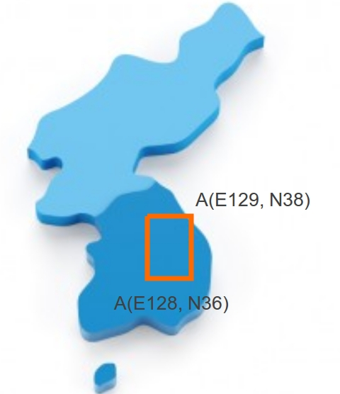

Longitude_dms : longitude with degree, minute and second
Latitude_dms : latitude with degree, minute and second
X_EPSG5186 : x coordinate on TM coordinate system
Y_EPSG5186 : y coordinate on TM coordiinate system
문제
강우과측소 데이터를 불러온다. Load rainfall staion data into R
전체 강우관측소 개수를 세어 n.st 변수에 입력한다.
Count all rainfall station and define it as variable n.ts
각 통제 기관에 해당되는 관측소의 개수를 파악하여 n.st.eachOr에 입력한다. (plyr패키지의 count 함수 사용)
Find out how many staions each of organization controlling station has control and define it as variable n.st.eachOr (use 'count' function in 'plyr' package)
경도 E128~129, 위도 N36~N38 범위에 해당되는 관측소의 개수를 n.st.range에 입력한다. (for 문과 if 문 사용) Determine how many staion is located in longitude E128~E129 and latitude N36~N38. And define it as variable n.st.range (use for loop, if statements)

두점 사이의 거리를 구하는 함수를 만들어라. (input: x1, y1, x2, y2. output: distance) Make function which can determine the distance between two points.
대기(Daegi)관측소와 등매(Deungmae)관측소의 거리를 계산하라. (TM좌표계인 X_EPSG5186과
Y_EPSG5186 좌표값은 m단위이다. 좌표값을 직접 입력하지 않고 관측소 이름으로 좌표값을 가져온다. grep 함수를
사용한다.)
Determine the distance between Daegi station and Deungmae stattion
(those rows X_EPSG5186 Y_EPSG5186 are made up by TM Coordinate System
which is using meter distance. better not to use coordinates directly,
but use station name to get coordinates. use 'grep' function)
다음과 같은 그래프를 그린다. (names 한수를 사용하여 벡터 데이터에 이름을 할당한다. barplot을 이용하여 그래프를 그린다. )
Display plot like below (use functions 'barplot' and 'names' )